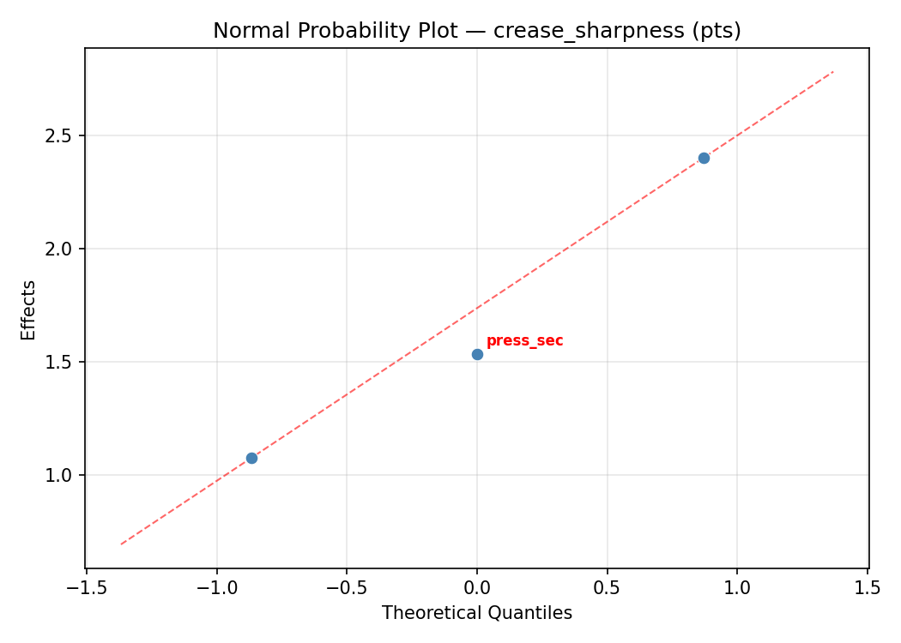
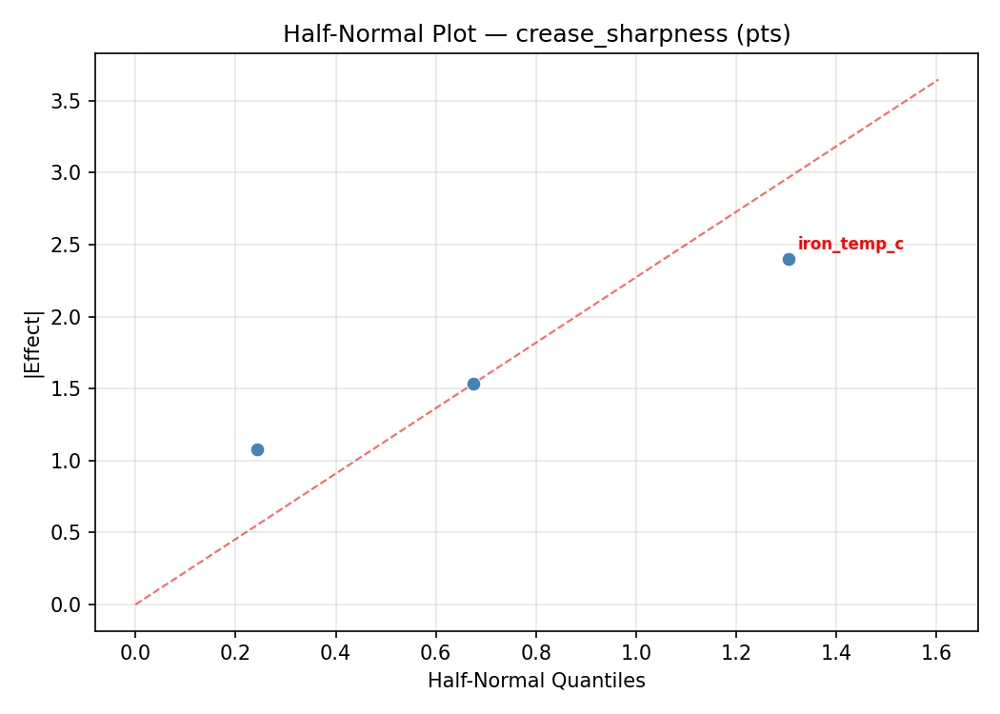
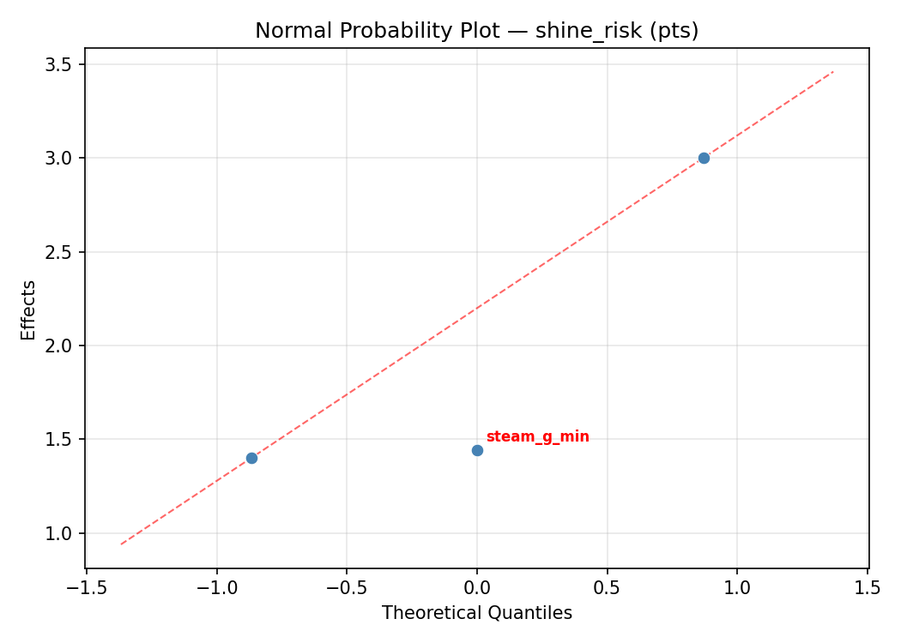
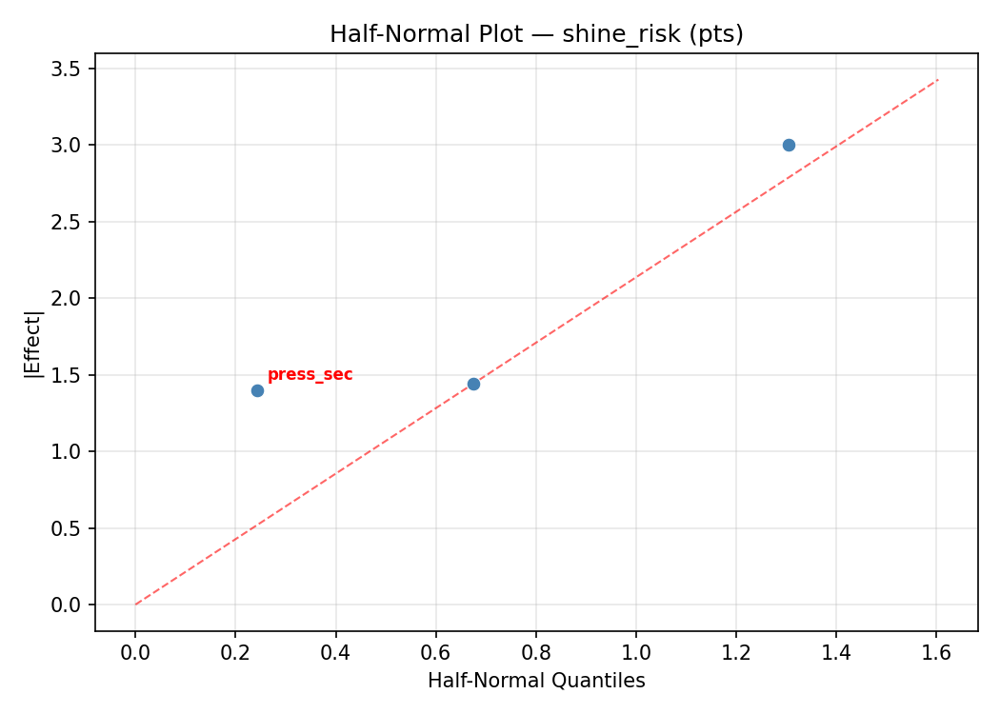

Summary
This experiment investigates garment pressing settings. Central composite design to maximize crease sharpness and minimize fabric shine by tuning iron temperature, steam output, and pressing duration.
The design varies 3 factors: iron temp c (C), ranging from 110 to 200, steam g min (g/min), ranging from 0 to 40, and press sec (sec), ranging from 3 to 15. The goal is to optimize 2 responses: crease sharpness (pts) (maximize) and shine risk (pts) (minimize). Fixed conditions held constant across all runs include fabric = wool_blend, press cloth = yes.
A Central Composite Design (CCD) was selected to fit a full quadratic response surface model, including curvature and interaction effects. With 3 factors this produces 22 runs including center points and axial (star) points that extend beyond the factorial range.
Quadratic response surface models were fitted to capture potential curvature and factor interactions. The RSM contour plots below visualize how pairs of factors jointly affect each response.
Key Findings
For crease sharpness, the most influential factors were press sec (43.0%), steam g min (30.9%), iron temp c (26.2%). The best observed value was 8.0 (at iron temp c = 155, steam g min = 20, press sec = -1.95445).
For shine risk, the most influential factors were press sec (46.5%), steam g min (33.0%), iron temp c (20.5%). The best observed value was 1.5 (at iron temp c = 155, steam g min = 20, press sec = 9).
Recommended Next Steps
- Run confirmation experiments at the predicted optimal settings to validate the model.
- Consider whether any fixed factors should be varied in a future study.
Experimental Setup
Factors
| Factor | Low | High | Unit |
|---|
iron_temp_c | 110 | 200 | C |
steam_g_min | 0 | 40 | g/min |
press_sec | 3 | 15 | sec |
Fixed: fabric = wool_blend, press_cloth = yes
Responses
| Response | Direction | Unit |
|---|
crease_sharpness | ↑ maximize | pts |
shine_risk | ↓ minimize | pts |
Configuration
{
"metadata": {
"name": "Garment Pressing Settings",
"description": "Central composite design to maximize crease sharpness and minimize fabric shine by tuning iron temperature, steam output, and pressing duration"
},
"factors": [
{
"name": "iron_temp_c",
"levels": [
"110",
"200"
],
"type": "continuous",
"unit": "C"
},
{
"name": "steam_g_min",
"levels": [
"0",
"40"
],
"type": "continuous",
"unit": "g/min"
},
{
"name": "press_sec",
"levels": [
"3",
"15"
],
"type": "continuous",
"unit": "sec"
}
],
"fixed_factors": {
"fabric": "wool_blend",
"press_cloth": "yes"
},
"responses": [
{
"name": "crease_sharpness",
"optimize": "maximize",
"unit": "pts"
},
{
"name": "shine_risk",
"optimize": "minimize",
"unit": "pts"
}
],
"settings": {
"operation": "central_composite",
"test_script": "use_cases/186_iron_press_settings/sim.sh"
}
}
Experimental Matrix
The Central Composite Design produces 22 runs. Each row is one experiment with specific factor settings.
| Run | iron_temp_c | steam_g_min | press_sec |
|---|
| 1 | 155 | 20 | 9 |
| 2 | 200 | 0 | 15 |
| 3 | 110 | 40 | 3 |
| 4 | 155 | 56.5148 | 9 |
| 5 | 155 | 20 | 9 |
| 6 | 72.8416 | 20 | 9 |
| 7 | 155 | 20 | -1.95445 |
| 8 | 155 | 20 | 9 |
| 9 | 200 | 40 | 3 |
| 10 | 237.158 | 20 | 9 |
| 11 | 155 | 20 | 9 |
| 12 | 155 | -16.5148 | 9 |
| 13 | 155 | 20 | 9 |
| 14 | 110 | 0 | 15 |
| 15 | 155 | 20 | 9 |
| 16 | 200 | 0 | 3 |
| 17 | 155 | 20 | 19.9545 |
| 18 | 200 | 40 | 15 |
| 19 | 155 | 20 | 9 |
| 20 | 110 | 0 | 3 |
| 21 | 110 | 40 | 15 |
| 22 | 155 | 20 | 9 |
Step-by-Step Workflow
1
Preview the design
$ python doe.py info --config use_cases/186_iron_press_settings/config.json
2
Generate the runner script
$ python doe.py generate --config use_cases/186_iron_press_settings/config.json \
--output use_cases/186_iron_press_settings/results/run.sh --seed 42
3
Execute the experiments
$ bash use_cases/186_iron_press_settings/results/run.sh
4
Analyze results
$ python doe.py analyze --config use_cases/186_iron_press_settings/config.json
5
Get optimization recommendations
$ python doe.py optimize --config use_cases/186_iron_press_settings/config.json
6
Multi-objective optimization
With 2 competing responses, use --multi to find the best compromise via Derringer–Suich desirability.
$ python doe.py optimize --config use_cases/186_iron_press_settings/config.json --multi
7
Generate the HTML report
$ python doe.py report --config use_cases/186_iron_press_settings/config.json \
--output use_cases/186_iron_press_settings/results/report.html
Features Exercised
| Feature | Value |
|---|
| Design type | central_composite |
| Factor types | continuous (all 3) |
| Arg style | double-dash |
| Responses | 2 (crease_sharpness ↑, shine_risk ↓) |
| Total runs | 22 |
Analysis Results
Generated from actual experiment runs using the DOE Helper Tool.
Response: crease_sharpness
Top factors: press_sec (43.0%), steam_g_min (30.9%), iron_temp_c (26.2%).
ANOVA
| Source | DF | SS | MS | F | p-value |
|---|
| Source | DF | SS | MS | F | p-value |
| iron_temp_c | 4 | 7.6695 | 1.9174 | 1.178 | 0.3829 |
| steam_g_min | 4 | 6.0486 | 1.5122 | 0.929 | 0.4888 |
| press_sec | 4 | 10.4095 | 2.6024 | 1.599 | 0.2563 |
| Lack | of | Fit | 2 | 0.4361 | 0.2180 |
| Pure | Error | 7 | 11.3950 | | |
| Error | 9 | 11.8311 | 1.6279 | | |
| Total | 21 | 35.9586 | 1.7123 | | |
Pareto Chart

Main Effects Plot

Normal Probability Plot of Effects

Half-Normal Plot of Effects

Model Diagnostics

Response: shine_risk
Top factors: press_sec (46.5%), steam_g_min (33.0%), iron_temp_c (20.5%).
ANOVA
| Source | DF | SS | MS | F | p-value |
|---|
| Source | DF | SS | MS | F | p-value |
| iron_temp_c | 4 | 6.1625 | 1.5406 | 0.395 | 0.8073 |
| steam_g_min | 4 | 5.1358 | 1.2840 | 0.329 | 0.8514 |
| press_sec | 4 | 12.0108 | 3.0027 | 0.771 | 0.5708 |
| Lack | of | Fit | 2 | 0.0000 | 0.0000 |
| Pure | Error | 7 | 27.2788 | | |
| Error | 9 | 27.1308 | 3.8970 | | |
| Total | 21 | 50.4400 | 2.4019 | | |
Pareto Chart

Main Effects Plot

Normal Probability Plot of Effects

Half-Normal Plot of Effects

Model Diagnostics

Response Surface Plots
3D surfaces fitted with quadratic RSM. Red dots are observed data points.
crease sharpness iron temp c vs press sec

crease sharpness iron temp c vs steam g min

crease sharpness steam g min vs press sec

shine risk iron temp c vs press sec

shine risk iron temp c vs steam g min

shine risk steam g min vs press sec

Multi-Objective Optimization
When responses compete, Derringer–Suich desirability finds the best compromise.
Each response is scaled to a 0–1 desirability, then combined via a weighted geometric mean.
Overall Desirability
D = 0.6816
Per-Response Desirability
| Response | Weight | Desirability | Predicted | Dir |
|---|
crease_sharpness |
1.5 |
|
5.51 0.5433 5.51 pts |
↑ |
shine_risk |
2.0 |
|
2.45 0.8080 2.45 pts |
↓ |
Recommended Settings
| Factor | Value |
|---|
iron_temp_c | 110 C |
steam_g_min | 0 g/min |
press_sec | 5.4 sec |
Source: from RSM model prediction
Trade-off Summary
Sacrifice = how much worse than single-objective best.
| Response | Predicted | Best Observed | Sacrifice |
|---|
shine_risk | 2.45 | 1.50 | +0.95 |
Top 3 Runs by Desirability
| Run | D | Factor Settings |
|---|
| #1 | 0.6473 | iron_temp_c=155, steam_g_min=20, press_sec=9 |
| #5 | 0.6472 | iron_temp_c=155, steam_g_min=56.5148, press_sec=9 |
Model Quality
| Response | R² | Type |
|---|
shine_risk | 0.5555 | quadratic |
Full Multi-Objective Output
============================================================
MULTI-OBJECTIVE OPTIMIZATION
Method: Derringer-Suich Desirability Function
============================================================
Overall desirability: D = 0.6816
Response Weight Desirability Predicted Direction
---------------------------------------------------------------------
crease_sharpness 1.5 0.5433 5.51 pts ↑
shine_risk 2.0 0.8080 2.45 pts ↓
Recommended settings:
iron_temp_c = 110 C
steam_g_min = 0 g/min
press_sec = 5.4 sec
(from RSM model prediction)
Trade-off summary:
crease_sharpness: 5.51 (best observed: 8.00, sacrifice: +2.49)
shine_risk: 2.45 (best observed: 1.50, sacrifice: +0.95)
Model quality:
crease_sharpness: R² = 0.3222 (linear)
shine_risk: R² = 0.5555 (quadratic)
Top 3 observed runs by overall desirability:
1. Run #15 (D=0.6532): iron_temp_c=200, steam_g_min=0, press_sec=15
2. Run #1 (D=0.6473): iron_temp_c=155, steam_g_min=20, press_sec=9
3. Run #5 (D=0.6472): iron_temp_c=155, steam_g_min=56.5148, press_sec=9
Full Analysis Output
=== Main Effects: crease_sharpness ===
Factor Effect Std Error % Contribution
--------------------------------------------------------------
press_sec 3.2000 0.2790 43.0%
steam_g_min 2.3000 0.2790 30.9%
iron_temp_c 1.9500 0.2790 26.2%
=== ANOVA Table: crease_sharpness ===
Source DF SS MS F p-value
-----------------------------------------------------------------------------
iron_temp_c 4 7.6695 1.9174 1.178 0.3829
steam_g_min 4 6.0486 1.5122 0.929 0.4888
press_sec 4 10.4095 2.6024 1.599 0.2563
Lack of Fit 2 0.4361 0.2180 0.134 0.8768
Pure Error 7 11.3950 1.6279
Error 9 11.8311 1.6279
Total 21 35.9586 1.7123
=== Summary Statistics: crease_sharpness ===
iron_temp_c:
Level N Mean Std Min Max
------------------------------------------------------------
110 4 4.4500 1.3329 2.5000 5.4000
155 12 5.3583 1.4139 2.8000 8.0000
200 4 5.9500 0.5686 5.3000 6.6000
237.158 1 4.0000 0.0000 4.0000 4.0000
72.8416 1 4.0000 0.0000 4.0000 4.0000
steam_g_min:
Level N Mean Std Min Max
------------------------------------------------------------
-16.5148 1 6.4000 0.0000 6.4000 6.4000
0 4 5.8500 0.6608 5.2000 6.6000
20 12 5.1500 1.4299 2.8000 8.0000
40 4 4.5500 1.4271 2.5000 5.7000
56.5148 1 4.1000 0.0000 4.1000 4.1000
press_sec:
Level N Mean Std Min Max
------------------------------------------------------------
-1.95445 1 8.0000 0.0000 8.0000 8.0000
15 4 5.6000 0.7874 4.7000 6.6000
19.9545 1 5.6000 0.0000 5.6000 5.6000
3 4 4.8000 1.5979 2.5000 6.2000
9 12 4.8917 1.2071 2.8000 6.8000
=== Main Effects: shine_risk ===
Factor Effect Std Error % Contribution
--------------------------------------------------------------
press_sec 3.8000 0.3304 46.5%
steam_g_min 2.7000 0.3304 33.0%
iron_temp_c 1.6750 0.3304 20.5%
=== ANOVA Table: shine_risk ===
Source DF SS MS F p-value
-----------------------------------------------------------------------------
iron_temp_c 4 6.1625 1.5406 0.395 0.8073
steam_g_min 4 5.1358 1.2840 0.329 0.8514
press_sec 4 12.0108 3.0027 0.771 0.5708
Lack of Fit 2 0.0000 0.0000 0.000 1.0000
Pure Error 7 27.2788 3.8970
Error 9 27.1308 3.8970
Total 21 50.4400 2.4019
=== Summary Statistics: shine_risk ===
iron_temp_c:
Level N Mean Std Min Max
------------------------------------------------------------
110 4 2.9250 0.9215 1.8000 4.0000
155 12 3.8750 1.9098 1.5000 7.4000
200 4 3.5750 0.7320 3.0000 4.6000
237.158 1 2.2000 0.0000 2.2000 2.2000
72.8416 1 2.3000 0.0000 2.3000 2.3000
steam_g_min:
Level N Mean Std Min Max
------------------------------------------------------------
-16.5148 1 5.2000 0.0000 5.2000 5.2000
0 4 3.5250 0.8057 2.7000 4.6000
20 12 3.6083 1.9285 1.5000 7.4000
40 4 2.9750 0.9032 1.8000 4.0000
56.5148 1 2.5000 0.0000 2.5000 2.5000
press_sec:
Level N Mean Std Min Max
------------------------------------------------------------
-1.95445 1 6.7000 0.0000 6.7000 6.7000
15 4 3.6000 0.8602 2.7000 4.6000
19.9545 1 3.0000 0.0000 3.0000 3.0000
3 4 2.9000 0.7746 1.8000 3.6000
9 12 3.4417 1.7686 1.5000 7.4000
Optimization Recommendations
=== Optimization: crease_sharpness ===
Direction: maximize
Best observed run: #18
iron_temp_c = 155
steam_g_min = 20
press_sec = -1.95445
Value: 8.0
RSM Model (linear, R² = 0.3287, Adj R² = 0.2168):
Coefficients:
intercept +5.1773
iron_temp_c +0.0148
steam_g_min +0.2810
press_sec -0.8525
RSM Model (quadratic, R² = 0.4516, Adj R² = 0.0403):
Coefficients:
intercept +5.2799
iron_temp_c +0.0148
steam_g_min +0.2810
press_sec -0.8525
iron_temp_c*steam_g_min +0.2750
iron_temp_c*press_sec -0.4750
steam_g_min*press_sec +0.2250
iron_temp_c^2 -0.0813
steam_g_min^2 -0.2163
press_sec^2 +0.1437
Curvature analysis:
steam_g_min coef=-0.2163 concave (has a maximum)
press_sec coef=+0.1437 convex (has a minimum)
iron_temp_c coef=-0.0813 negligible curvature
Notable interactions:
iron_temp_c*press_sec coef=-0.4750 (antagonistic)
Predicted optimum (from linear model, at observed points):
iron_temp_c = 155
steam_g_min = 20
press_sec = -1.95445
Predicted value: 6.7337
Surface optimum (via L-BFGS-B, linear model):
iron_temp_c = 200
steam_g_min = 40
press_sec = 3
Predicted value: 6.3256
Model quality: Weak fit — consider adding center points or using a different design.
Factor importance:
1. press_sec (effect: 4.0, contribution: 66.0%)
2. steam_g_min (effect: 1.6, contribution: 26.4%)
3. iron_temp_c (effect: 0.5, contribution: 7.6%)
=== Optimization: shine_risk ===
Direction: minimize
Best observed run: #20
iron_temp_c = 155
steam_g_min = 20
press_sec = 9
Value: 1.5
RSM Model (linear, R² = 0.2001, Adj R² = 0.0668):
Coefficients:
intercept +3.5000
iron_temp_c +0.0317
steam_g_min -0.0697
press_sec -0.8261
RSM Model (quadratic, R² = 0.3682, Adj R² = -0.1056):
Coefficients:
intercept +3.9697
iron_temp_c +0.0317
steam_g_min -0.0697
press_sec -0.8261
iron_temp_c*steam_g_min +0.1875
iron_temp_c*press_sec -0.2125
steam_g_min*press_sec +0.4375
iron_temp_c^2 -0.3249
steam_g_min^2 -0.4599
press_sec^2 +0.0801
Curvature analysis:
steam_g_min coef=-0.4599 concave (has a maximum)
iron_temp_c coef=-0.3249 concave (has a maximum)
press_sec coef=+0.0801 negligible curvature
Notable interactions:
steam_g_min*press_sec coef=+0.4375 (synergistic)
Predicted optimum (from linear model, at observed points):
iron_temp_c = 155
steam_g_min = 20
press_sec = -1.95445
Predicted value: 5.0082
Surface optimum (via L-BFGS-B, linear model):
iron_temp_c = 110
steam_g_min = 40
press_sec = 15
Predicted value: 2.5725
Model quality: Weak fit — consider adding center points or using a different design.
Factor importance:
1. press_sec (effect: 4.5, contribution: 64.7%)
2. steam_g_min (effect: 1.6, contribution: 23.2%)
3. iron_temp_c (effect: 0.8, contribution: 12.1%)